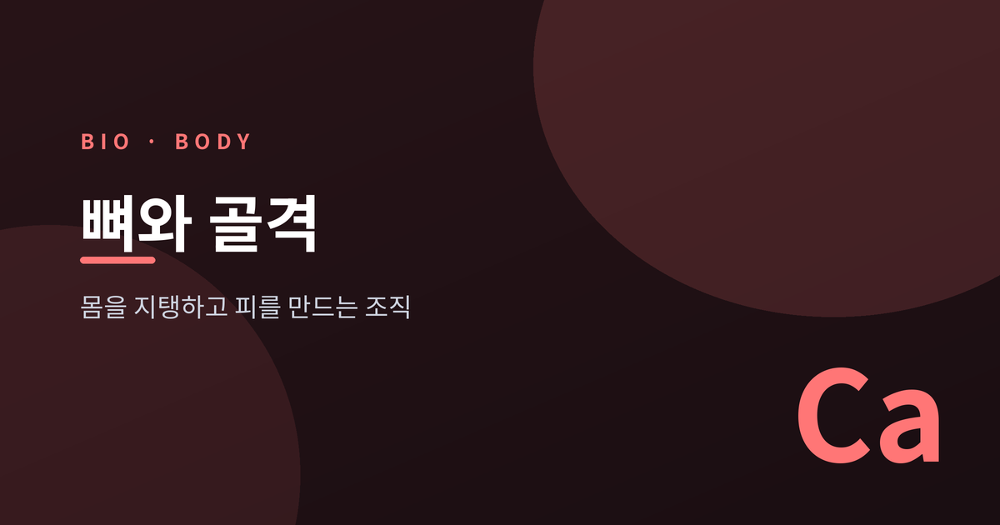
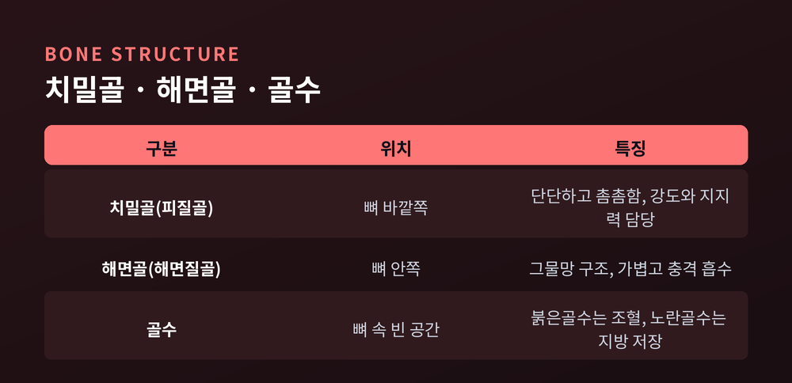
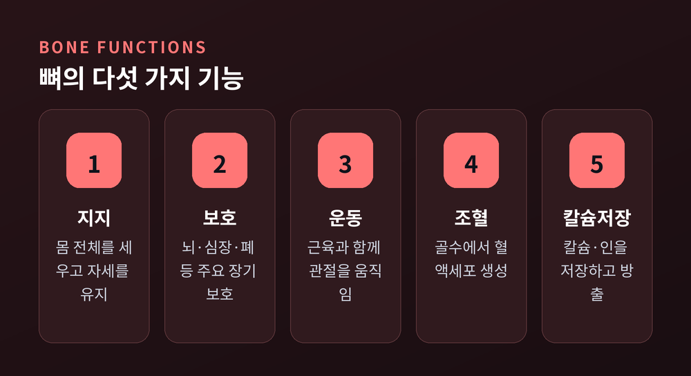
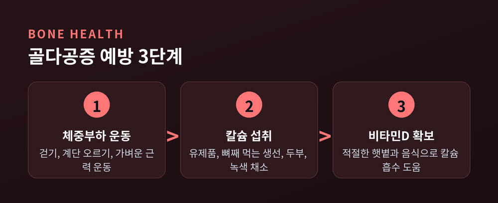

[바이오] 뼈와 골격 구조와 기능 — 몸 지탱하고 피 만드는 조직

오늘은 뼈와 골격에 대해 이야기해 보려 합니다.
뼈는 단단한 지지대이면서 동시에 혈액을 만드는 살아있는 조직입니다.
딱딱하고 고정된 조직이라는 인상과 달리, 뼈는 평생에 걸쳐 계속 바뀌는 조직입니다.
구조와 기능, 관리법까지 차례로 정리해 보겠습니다.
- 뼈는 치밀골·해면골·골수로 구성되며 서로 다른 역할을 맡습니다.
- 지지·보호·운동·조혈·칼슘저장이라는 다섯 가지 기능을 동시에 수행합니다.
- 조골세포와 파골세포가 뼈를 계속 새로 만들며, 균형이 무너지면 골다공증으로 이어질 수 있습니다.
뼈의 구조 — 치밀골, 해면골, 골수
사람의 몸에는 성인 기준으로 약 206개의 뼈가 있다고 알려져 있습니다.
뼈는 겉보기와 달리 균일한 덩어리가 아닙니다.
바깥쪽은 치밀골, 흔히 피질골이라 불리는 단단하고 촘촘한 조직으로 덮여 있습니다.
안쪽은 해면골이라는 그물망 구조로 채워져, 무게는 가볍지만 충격을 잘 흡수합니다.
뼈 속 빈 공간에는 골수가 자리 잡고 있습니다.
붉은골수는 적혈구, 백혈구, 혈소판을 만드는 조혈 작용을 담당합니다.
노란골수는 지방세포로 채워져 에너지를 저장하는 역할을 합니다.
나이가 들면서 붉은골수 중 일부가 점차 노란골수로 바뀌는 경향이 있다고 알려져 있습니다.
뼈마다 치밀골과 해면골의 비율은 조금씩 다릅니다.
팔다리의 긴뼈는 치밀골이 많고, 척추뼈나 골반처럼 넓적한 뼈는 해면골 비중이 큰 편입니다.
뼈 바깥은 골막이라는 얇은 막이 감싸고 있어 혈관과 신경이 드나드는 통로가 되어 줍니다.

뼈가 하는 다섯 가지 일
뼈는 단순히 몸을 받치는 기둥이 아닙니다.
첫째, 몸 전체를 세우고 자세를 유지하는 지지 기능을 합니다.
둘째, 두개골이나 갈비뼈처럼 뇌와 심장, 폐 같은 중요한 장기를 보호합니다.
셋째, 근육과 연결되어 관절을 지렛대 삼아 움직임을 만들어 냅니다.
넷째, 골수에서 혈액세포를 만드는 조혈 작용을 맡습니다.
다섯째, 몸속 칼슘과 인의 대부분을 저장했다가 필요할 때 혈액으로 내보냅니다.
몸속 칼슘의 대부분이 뼈에 저장되어 있다는 점은 잘 알려진 사실입니다.
혈액 속 칼슘 농도가 낮아지면 뼈에서 칼슘을 꺼내 쓰고, 여유가 있으면 다시 뼈에 채워 넣는 식으로 균형을 맞춥니다.
이 조절 덕분에 근육 수축이나 신경 전달처럼 칼슘이 필요한 다른 기능도 안정적으로 유지될 수 있습니다.
다섯 가지 역할이 한 조직 안에서 동시에 이뤄진다는 점이 뼈의 특별한 부분이라고 생각합니다.

골밀도 관리와 골다공증 예방
뼈는 완성된 뒤에도 멈추지 않습니다.
조골세포는 새 뼈를 만들고, 파골세포는 오래된 뼈를 흡수합니다.
두 세포가 균형을 이루며 뼈는 평생 리모델링을 거듭하는 셈입니다.
예전엔 골다공증이 나이 든 여성만의 문제로 여겨졌습니다.
지금은 남성과 비교적 젊은 층에서도 관리가 필요한 문제로 다뤄집니다.
골밀도는 보통 20~30대에 정점을 찍은 뒤 서서히 낮아지는 경향이 있습니다.
여성은 폐경 이후 호르몬 변화로 골밀도가 더 빠르게 줄어들 수 있다고 알려져 있습니다.
파골세포의 활동이 조골세포보다 앞서면 뼈가 약해지는 골다공증으로 이어질 수 있습니다.
골다공증은 뚜렷한 증상 없이 진행되다가, 작은 충격에도 골절로 이어지는 경우가 있어 주의가 필요합니다.
예방을 위해서는 걷기나 가벼운 근력 운동 같은 체중부하 운동이 도움이 된다고 알려져 있습니다.
칼슘이 풍부한 음식을 챙기고, 비타민D는 햇볕과 음식을 통해 함께 확보하시면 좋겠습니다.
비타민D는 칼슘 흡수를 돕는 역할을 하는 것으로 알려져 있습니다.
금연과 절주도 뼈 건강에 도움이 되는 습관으로 꼽힙니다.
다만 개인의 골밀도 상태나 위험 요인은 저마다 다릅니다.
뼈 건강이 걱정되신다면 골밀도 검사와 함께 전문의와 상담해 보시길 권합니다.

정리하면 이렇습니다.
뼈는 가만히 있는 조직이 아니라, 조골세포와 파골세포가 끊임없이 주고받는 살아있는 균형입니다.
지지대이자 혈액 공장이며 칼슘 저장고이기도 한 셈입니다.
겉으로 드러나지 않는다고 소홀히 하면, 정작 필요한 순간 티가 나는 것이 뼈이기도 합니다.
"뼈는 조용히 일하지만, 결코 쉬지 않는 조직입니다."
오늘 걷는 걸음 하나가 먼 훗날의 골밀도를 조금은 바꿔 놓을지도 모릅니다.